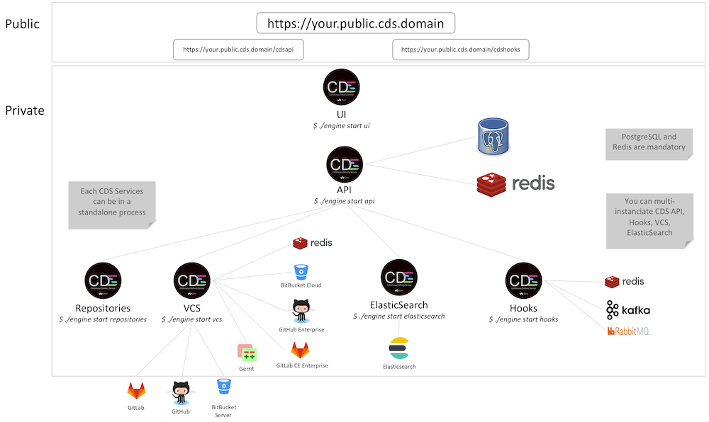

Understand the CDS µServices
CDS is composed of two binaries: engine and worker, you can find them on CDS Releases for your os/architecture.
workeris the binary used to run a CDS Job.engineis the binary used to run all CDS µServices.
CDS µServices
A CDS µService is a process that can be launch by the engine binary.
- api: this is the main µService.
- Each
apimust shared the same PostgreSQL and redis databases. All other CDS µServices have to communicate withapi. - The database user does not need to have the admin rights to create / alter tables.
- Each
- cdn: the
cdnservice is dedicated to receive and store CDS’s logs and artifacts.- Each
cdnmust shared the same PostgreSQL and redis databases. - The database user does not need to have the admin rights to create / alter tables.
- Each
- ui: the
uiservice serves the CDS UI static files.- It’s the only service that can be accessed by end users.
- http path:
/cdsapi- proxypass to reach CDS API. - http path:
/cdshooks- proxypass that can be used by some external integrations or webhooks.
- hooks: this service manages Hooks.
- You can multi-instanciate this service, it uses a redis to synchronize all tasks over all instances.
- Users and some integrations need to send HTTP requests to this service, you can use the proxypass
/cdshookson the CDS UI to reach this service.
- vcs: The aim of this µService is to communicate with Repository Manager as GitHub, GitLab, Bitbucket…
- You can multi-instanciate this service, a redis is used to synchronize tasks over all instances.
- repositories: this µService is used to enable the as-code feature.
- Users can store CDS Files on their repositories. This service clones user repositories on local filesystem.
- You can’t multi-instanciate this service for now.
- elasticsearch: user timeline and vulnerabilities computed are stored on a elasticsearch through this µService.
- It’s optional unless you want theses features activated on your CDS.
- hatchery:local: the local hatchery spawns CDS Workers locally.
- All workers shares the same filesystem.
- Not recommanded for production with
shared.infragroup
- hatchery:swarm: the swarm hatchery spawn CDS Workers with docker.
- A single process of
hatchery:swarmcan managed many docker daemons. - You can use Service Requirement with this hatchery.
- This hatchery uses the worker model docker.
- A single process of
- hatchery:openstack: the openstack hatchery creates Virtual Machine with a CDS Worker inside.
- This hatchery uses the worker model openstack.
- hatchery:kubernetes: the kubernetes hatchery creates a CDS Worker inside a Pod.
- You can use Service Requirement with this hatchery.
- This hatchery uses the worker model docker.
- hatchery:marathon: the marathon hatchery run CDS Worker as a marathon application.
- This hatchery uses the worker model docker.
- hatchery:vsphere: the vSphere hatchery creates Virtual Machine with a CDS Worker inside.
- This hatchery uses the worker model vsphere.
- migrate: this µService is used to run database migrations to upgrade your CDS Installation.
- The configuration needs a postgreSQL user with rights to create / alter tables on postgreSQL.
Single Process
With a single CDS Engine process, you can run all µServices. This is very convenient for testing CDS locally but it’s not recommanded for a production installation.

Multi-Processes
The binary engine can be used to launch in different processes each µService. This is recommanded for a production installation.
Each µService can be multi-instanciated, example:
- 6x
$engine start api, each api shared the same PostgreSQL and redis. - 6x
$engine start cdn, each cdn shared the same PostgreSQL and redis. - 3x
$engine start ui. - 3x
$engine start hooks, each hooks shared the same redis. - 3x
$engine start vcs, each hooks shared the same redis. - 3x
$engine start elasticsearch. - 1x
$engine start repositories.

RAM resources needed
Example of an installation for a production with 18.000 jobs launched per day:
- 6x
$engine start api- RAM: 3Go per instance
- Redis: 128Mo
- 6x
$engine start cdn- RAM: 3Go per instance
- Redis: 4Go
- 3x
$engine start ui- RAM: 128Mo per instance
- 3x
$engine start hooks- RAM: 256Mo per instance
- Redis: 256Mo
- 3x
$engine start vcs- RAM: 256Mo per instance
- Redis: 256Mo
- 3x
$engine start elasticsearch- RAM: 256Mo per instance
- 1x
$engine start repositories- RAM: 256Mo per instance
- 1x
$engine start migrate- RAM: 128Mo per instance
- hatcheries: 256Mo per instance